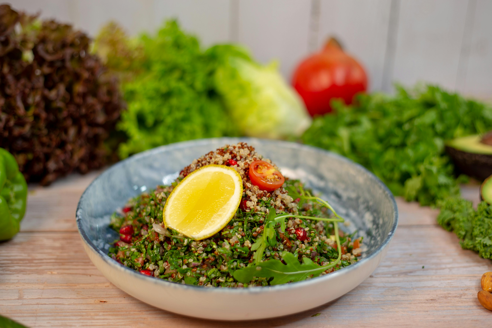

Descubra os Benefícios da Alimentação Saudável
Adotar uma dieta equilibrada e nutritiva pode transformar sua vida. Explore receitas e dicas para uma alimentação saudável.
Receitas Saudáveis

Salada de Quinoa
Uma salada refrescante e nutritiva com quinoa, vegetais frescos e um molho leve.
- Quinoa
- Tomates
- Pepino
- Folhas de espinafre
- Molho de limão

Smoothie Verde
Um smoothie energético com espinafre, maçã verde e um toque de gengibre.
- Espinafre
- Maçã verde
- Gengibre
- Água de coco
Melhora da Saúde
Uma alimentação saudável ajuda a prevenir doenças e promove um sistema imunológico forte.
Energia e Vitalidade
Consumir alimentos nutritivos aumenta a energia e a disposição para as atividades diárias.
Controle de Peso
Uma dieta balanceada ajuda no controle do peso e promove um metabolismo saudável.